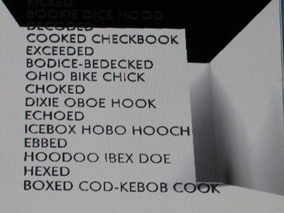

Word Museum was written by William Gillespie, programmed by Jason Rodriguez and David Dao at the Brown University CAVE.
As the second person to be offered Brown University's exclusive electronic writing fellowship, I entered a nascent degree program in which the only course offering was Cavewriting. The assignment I gave myself, in creating an ostensibly literary digital art installation in a virtual reality environment, was simply to create something legible. I had quickly discovered that the potential of the CAVE to make virtual objects scalable and manipulable in three-dimensional space was precisely the potential to render a text unreadable. Because a word that is enormous or minute, turned upside down, or read from the side or behind, becomes what a designer might call "text as decoration."
Because the means of moving through the virtual space or manipulating objects using the wand tended to be clunky and awkward -- much more effortful than manipulating a book, because only the programmers are allowed in the CAVE for an extended stay, because the programming is tedious (and the programmers assigned to me were inexperienced), and because an hour of wearing the goggles would induce strain in all but the most resilient of digital art lovers, I could rule out any book-length text. More disappointingly, it was not clear how even a substantial paragraph could be presented. Noah Wardrip-Fruin, of course, solved this problem in the simplest possible fashion—by ignoring the illusion of virtual space, projecting static paragraphs on the walls, and giving the reader a chance to read them, before employing the capacity of the CAVE to render them spectacularly illegible. But I did not want to rewrite his project.
What resulted was the Word Museum.
Consider the letter O. You can rotate it on the plane of the page, or even look at it from behind, and it is still readable as an O. The letter X is similar, if less versatile: it can be rotated to any of four positions and read from in front or from behind. The letter M is horizontally symmetric -- it can be flipped horizontally (read from behind, as if viewed in a mirror) -- and is still the letter M. Similarly, the letter K is vertically symmetric-you can flip it vertically (as if viewing its reflection in the surface of a pond) and it is still readable as a K, even if the proportions may be slightly askew. (Assume that I am using a simple sans-serif typeface such as Futura).
In this manner, I created a number of word objects that could be viewed from different angles without becoming illegible. The reader moves through a vast white architecture, through several apparently aircraft-hanger sized rooms, including a room with a scultped pond, confronting textual sculptures and paintings, some static, most kinetic.
I AVOW A MYTH YOU HOAX is a horizontally-symmetric text, rotating horizontally. In one instantiation, the words are distributed throughout a room. In another variation (below), the text is set in a column.
In the background are SOS and pod, rotating two-dimensional poems framed as paintings.
BAN POT is a cluster of nine alphabet blocks. Each side presents a three letter word. Using the wand, the reader can zap the blocks, making them disappear, revealing the letter on the block behind. Every possible configuration is a three-letter English word.

...BODICE-BEDECKED OHIO BIKE CHICK... is a rotating kinetic poem composed of vertically-symmetric letters. The poem rotates along a horizontal axis, and when it is upside-down the lines are the same but in the opposite order. By alternating subjects and prepositions, I managed to make either configuration vaguely grammatic.
LETTER TO LINUS is a "hypercube" (a hypertext in the shape of a cube), a combinatoric multisequential revolutionary poem. The reader is not meant to read the faces of the cube, but across the edges. Each face has the beginning (eg. "Take") and end ("down resistance") of a phrase, with the six beginnings and six endings resulting in 24 different slogans. The hypercube as recreated in the Word Museum is incomplete: the slogans are really meant to be transitions between six paragraphs which can be read in any order, and which describe an alarming future. I found no way to fit the paragraphs into the cube while adhering to the overall constraint that everything be always legible. However, the full text was published online in a previous issue of the Iowa Review Web and the curious may read it in its entirety.
WOW MOM is the simplest and most elegant demonstration of the Word Museum's constraints: horizontally- and vertically-symmetric, the poem is legible from any angle (except when viewed from the plane of the text itself). In this variation the poem hovers above a pedestal, rotating on two axes.
The vertically-symmetric word ID rotates along a horizontal axis that runs along the floor. The word emerges from below and is submerges again, representing the subconscious.
MOTH TOM / I MIX A MAXIM is a horizontally-symmetric palindrome set as a rotating halo. In other words, the sequence of letters is the same forward and backward, and the text can be read from in front or from behind.
Here is programmer David Dao proofreading our virtual signature: the rotating initials DD (vertically-symmetric) and WM (legible when rotated 180 degrees in the plane of the text).